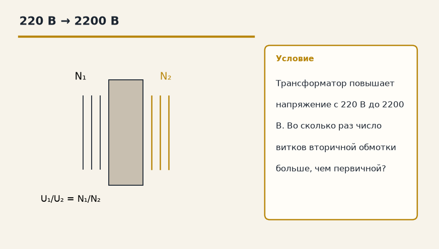
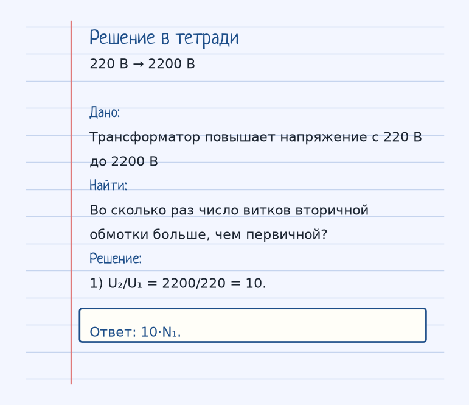
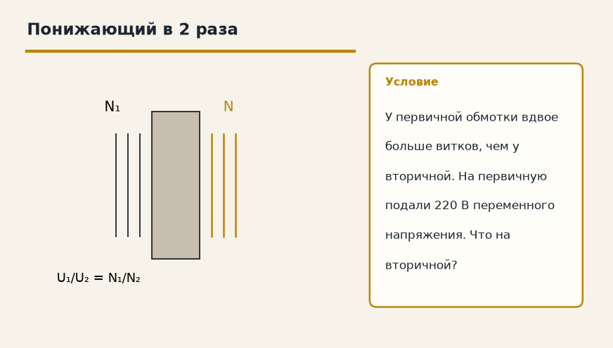
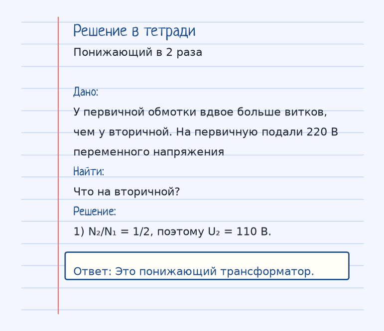

Тема «Трансформатор»: физический смысл, единицы величин, типичные ошибки и два разобранных примера.

Схема к условию.
Физический смысл
Устройство для изменения переменного напряжения. Состоит из двух катушек на одном сердечнике. За счет электромагнитной индукции энергия передается из первичной обмотки во вторичную.
Трансформатор переносит энергию переменного тока из одной обмотки в другую через общее магнитное поле сердечника. Постоянный ток он не трансформирует: поток должен меняться, иначе во вторичной обмотке нет ЭДС индукции.
Отношение напряжений равно отношению витков: U₁/U₂ = N₁/N₂. В задаче карточки 220 В превращаются в 2200 В, отношение 10, значит вторичная обмотка имеет в 10 раз больше витков.
Если витков во вторичной меньше, трансформатор понижающий: напряжение падает, зато ток во вторичной цепи может быть больше. Энергия при идеальном трансформаторе не берётся из ниоткуда: выше напряжение — ниже ток.
Формула и единицы
U₁ / U₂ = N₁ / N₂
N₁, N₂ — число витков.
N₁ и N₂ — числа витков. U₁/U₂ = N₁/N₂.
Пояснение
Шестеренки. Маленькая шестеренка крутит большую — увеличивает момент силы (аналог напряжения).
Шестерёнки: маленькая крутит большую и меняет «момент». У обмоток так меняется напряжение пропорционально виткам.
Типичные ошибки
Трансформатор не повышает постоянное напряжение батареи. Нужен переменный поток. И U₂/U₁ — это N₂/N₁, не наоборот.
Разобранные примеры. Решение каждого открывается отдельно.
Разбор 1
220 В → 2200 В
Трансформатор повышает напряжение с 220 В до 2200 В. Во сколько раз число витков вторичной обмотки больше, чем первичной?
На схеме только условие.
Порядок записи: данные, единицы СИ, искомая величина, ход решения, ответ.
Дано. Трансформатор повышает напряжение с 220 В до 2200 В
В СИ.
Найти. Во сколько раз число витков вторичной обмотки больше, чем первичной?
Решение.
U₂/U₁ = 2200/220 = 10.
10·N₁.

Разбор 2
Понижающий в 2 раза
У первичной обмотки вдвое больше витков, чем у вторичной. На первичную подали 220 В переменного напряжения. Что на вторичной?

На схеме только условие.
Порядок записи: данные, единицы СИ, искомая величина, ход решения, ответ.
Дано. У первичной обмотки вдвое больше витков, чем у вторичной. На первичную подали 220 В переменного напряжения
В СИ.
Найти. Что на вторичной?
Решение.
N₂/N₁ = 1/2, поэтому U₂ = 110 В.
Это понижающий трансформатор.

Разбор 3
В четыре раза
Отношение чисел витков N₂/N₁ = 4. На первичную обмотку подали 30 В переменного напряжения. Найдите напряжение на вторичной.
На схеме только условие.
Порядок записи: данные, единицы СИ, искомая величина, ход решения, ответ.
Дано. N₂/N₁ = 4, U₁ = 30 В
В СИ.
U₂/U₁ = N₂/N₁.
Найти. U₂
Решение.
U₂ = 4·30 = 120 В.
120 В.
Разбор 4
Понижающий
Вторичных витков меньше, чем первичных. Какой это трансформатор по напряжению?
На схеме только условие.
Порядок записи: данные, единицы СИ, искомая величина, ход решения, ответ.
Дано. N₂ < N₁
В СИ.
U относится как N.
Найти. Тип
Решение.
Напряжение во вторичной цепи ниже. Трансформатор понижающий.
Понижающий.
Разбор 5
Постоянный ток
Почему трансформатор не передаёт напряжение от батареи постоянного тока?
На схеме только условие.
Порядок записи: данные, единицы СИ, искомая величина, ход решения, ответ.
Дано. Поток не меняется
В СИ.
Нужна индукция.
Найти. Причина
Решение.
При постоянном токе магнитный поток не меняется, ЭДС во вторичной обмотке не возникает.
Поток не меняется, ЭДС не наводится.
Разбор 6
Формула
Как связаны напряжения и числа витков идеального трансформатора?
На схеме только условие.
Порядок записи: данные, единицы СИ, искомая величина, ход решения, ответ.
Дано. Две обмотки на одном сердечнике
В СИ.
U₁/U₂ = N₁/N₂.
Найти. Формула
Решение.
U₁/U₂ = N₁/N₂.
U₁/U₂ = N₁/N₂.
Разбор 7
Повышающий
Где больше витков у повышающего трансформатора?
На схеме только условие.
Порядок записи: данные, единицы СИ, искомая величина, ход решения, ответ.